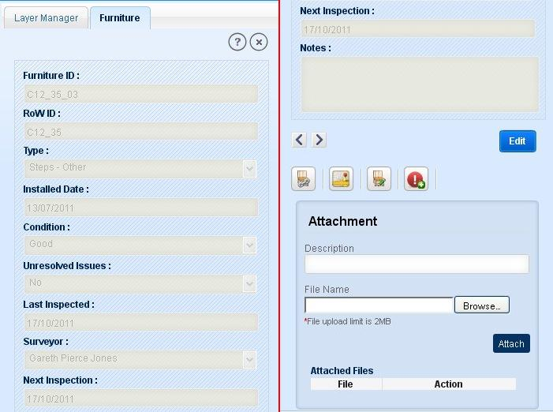
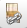
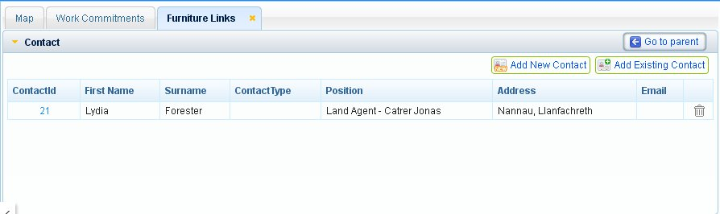
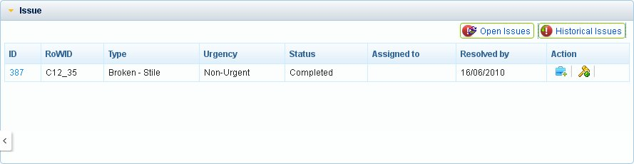
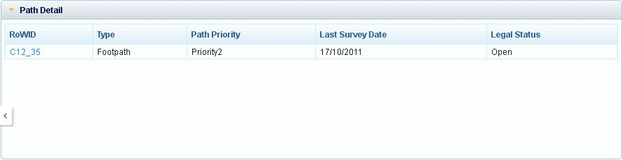
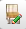

In this functionality user will be allowed to view any furniture information, and according to his role and rights, user will be able to edit furniture information. Also user can create issue on furniture.
In this functionality, user is allowed to view detailed information of selected furniture. For this user has to make furniture layer as active layer.
User selects Furniture by Search/ Query Builder/ Select Feature/ Select by Rectangle/Select by Polygon. Selected feature/features should be displayed in result panel.
Now select the required record from result panel and click on ‘Detailed Info’ tool on top of result panel.
Application opens new tab ‘Furniture’ in left panel with the detailed information of selected furniture in read only format.
The Furniture information includes attributes as shown in below figures:

Fig.1 Furniture Information
This tab also includes
Button : Edit
Links: ‘Previous’ and ‘Next’
Tools: View Furniture Links, Map It, Edit Furniture, Create Issue
Attachment box with the list of already attached documents (if any) as shown in figure above.
Attach Files: In the attachment box, user is allowed to attach any type of file (up to 2mb) like test file or image file.To attach a file to furniture,
Enter the description.
Enter the file path or browse to the location of file.
Click on Attach button.
On successful attachment document will be displayed in the documents list.
To remove an attachment, click on the remove icon in Action column. Application displays conformation message “Are You Sure you want to delete”.
Click Ok and the document will be removed from list.
Click Cancel to discard.
To open a pre-attached document click on that, attached document will be opened.
To edit furniture information, click on ‘Edit’ button in Furniture tab. Application changes the attributes to editable form.
After doing the required changes in attribute fields, click on ‘Save’ button.
Application saves the changes by creating the old records as historical details and the changes will be saved as current details of selected furniture.
On saving the changes application displays message as “Data saved”.
Click on Cancel button, application discard the changes and the attributes are changed to read only format.
This functionality allows users to view historical survey details of selected furniture as Historical Details.
To view historical details of selected furniture, click on ‘Previous’ tool present on Furniture tab.
On clicking ‘Previous’ tool application shows the historical details previous of current details.
After first historical details, if user clicks on ‘Previous’ tool, application shows the message as “No Historical Records”.
Now to view later version of the furniture details, click on ‘Next’ button. As user reaches to the latest version, application displays message as “No More Records”.
This tool allows user to view issues and contacts related to selected furniture. In this section user can see the parent path information of the selected furniture.
Click on ‘Furniture Links’  icon on Furniture tab. Application opens a new tab ‘Furniture Links’ on map window.
This window consists of three accordions: Contact, Issue and Path Details. Contact accordion is default open accordion with a button ‘Go to Parent’ on top.

Fig.2 Furniture Links
Click on ‘Go to Parent’ button again shows the furniture details on left panel if furniture details tab is closed.
To go any of the accordions, just click on that accordion.
These accordions are described below:
Issues
As user clicks on Issue accordion, application expands the accordion with the list of all open issues (if exists) in tabular format for selected furniture. This accordion has two buttons ‘Open Issues’ and ‘Historical Issues’.

Fig.3 Issue accordion
To view the old issues on selected furniture, user clicks on ‘Historical Issues’ button. Application will display list of all issues those are resolved for selected furniture. If no historical issue exists for selected furniture, application shows a message “No historical issues are associated with selected Furniture”.
To go to the open issues list again, click on Open Issues button.
Click on ID of an issue to view its details.
In the tabular list of the open issues, in the last column ‘Action’ table have two icons: Create/View Job and Create/View Legal.
On clicking ‘Create/View job’ application opens a form in left panel as Job with job details if already created or as a new form to create job for that issue if not created.
Similarly if user clicks on ‘Create/View Legal’ icon, application opens a form in left panel as Legal with legal details if already created or a blank form to create a new legal.
Contact
Contact part contains the list of contacts of SNPA contractors related to selected furniture. Here user is allowed to add new contact to Furniture and select a contact to add to furniture from the contractor’s existing list.
As user clicks on a Contact accordion, application expands contact tab with the tabular list of contacts related to selected furniture.
To view detailed information of a contact, click on ContactID of a record.
In the last column of the table a tool ‘Delete’ exist to delete the contact record.
To add a new contact, click on Add New Contact button or to add a contact from existing users list click on Add Existing Contact button.
Path Details
In this section of furniture link, user is allowed to view the parent path information.
Click on Path Details option, application expands the accordion with details of parent path on which that furniture exists.
Click on RoWID of parent path. Application displays detailed information of the parent path in left panel.

Fig.4 Path Details of furniture
With this functionality user is allowed to zoom to selected furniture from the detailed information of the furniture.
Click on ‘Locate on Map’ tool on Furniture tab. Application zooms to the selected furniture on map canvas.
This functionality allows user to edit furniture like move furniture, delete furniture and edit furniture details without creating a historical detail. Click on the Edit Furniture  tool, application opens Editing tab in left panel with furniture layer selected as editable layer.
User is allowed to mark an issue on Furniture under this functionality. To create an issue over Furniture:
Click on ‘Create Issue’ button. Application opens editing tab in left panel with editing functionalities.
Click on Create link in editing tab. Application expands Create link.
Select point tool from Create part.
Click on map over selected furniture at required location. If user clicks at a location other than selected furniture application displays message “No Furniture found at this location”.
On clicking over furniture, application expands Edit Attribute link with all the issue details.
Enter the values for all the fields (except some auto filled not editable fields). Click on ‘Apply’ button. Application validates the fields and displays message “Click on Save button to save the Issue”.
Click ‘Ok’ and save the issue by clicking on ‘Save’ button in general editing tools. Application displays the issue on furniture.